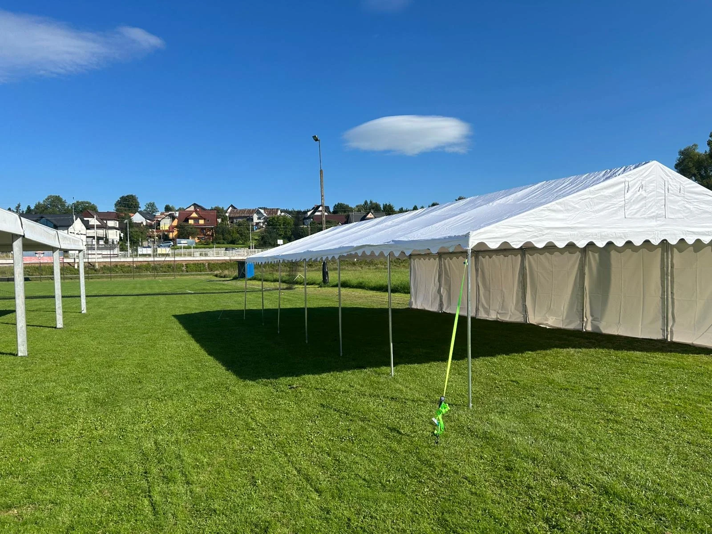

— 85 km z bazy w Jędrzejowie. Dowóz gratis (mieści się w 250 km). Trasa DK42 = 90-105 min. Ekspresy od 200 zł, duże z montażem 1 200-1 600 zł brutto. Końskie + powiat konecki: Stąporków, Szydłowiec, Ruda Maleniecka, Gowarczów, Radoszyce.
Końskie to 85 km z Jędrzejowa — północ świętokrzyskiego, trasa DK42 przez Włoszczową lub kombinacja DK78/DK74. 90-105 min dostawczakiem. Dowóz w cenie (mieści się w darmowym zasięgu 250 km). Obsługujemy miasto + cały powiat konecki (Stąporków, Ruda Maleniecka, Gowarczów, Radoszyce, Smyków, Fałków). Specyfika regionu: dużo festynów OSP, parafii, gminnych imprez. Mało lokalnej konkurencji — klienci dzwonią do Kielc lub Radomia.
Regionu północno-świętokrzyskiego. Dużo festynów OSP + wesela + komunie parafialne.
85 km z Jędrzejowa = mieści się w darmowym zasięgu. Mało konkurencji lokalnej — wchodzimy bez walki cenowej.
Dowóz w cenie (85 km). Urodziny, jarmark, kameralne.
Wesele, komunia, jubileusz, event firmowy.
Festyn gminny, dożynki, dni miasta. FV na NIP gminy.
— Brutto, VAT w cenie. Dowóz do Końskich bez dopłat (85 km < 250 km). Pełen cennik →
Cały powiat konecki + sąsiednie gminy — wszystko w darmowym zasięgu 250 km:
Sierpień 2025, festyn OSP w gminie powiatu koneckiego (90 km z bazy). 7 namiotów — 5 ekspresy 4,5×3m dla lokalnych kramów (kramy rzemieślnicze, pszczelarstwo, koło gospodyń, chleb, słodycze), 1 duży 5×10m na catering, 1 duży 6×12m na scenę z kapelą i konferansjerkę. Dojazd 90 min trasą DK42, gratis. Montaż 5h z ekipą 4-osobową. FV na NIP gminy, płatność 21 dni. "Gmina szukała firmy bliższej niż Radom. My byliśmy 30 km bliżej i taniej. Weekend 2026 już zaklepany — cyklicznie."
Jak w cenniku głównym — bez dopłat (85 km < 250 km). Ekspres 200 zł, duży 1 200-1 300 zł, pakiet 1 500-1 600 zł, zestaw OSP od 2 500 zł. Brutto.
85 km trasą DK42 przez Włoszczową lub DK74 — 90-105 min. Gratis.
Cały powiat konecki: Stąporków, Ruda Maleniecka, Gowarczów, Radoszyce, Smyków, Fałków. Plus Szydłowiec, Skarżysko-Kamienna. Wszystko gratis.
Tak, często. Sierpień-wrzesień peak. Zestaw 5-8 namiotów dla 300-500 osób. FV na NIP gminy, 21 dni płatność. Cyklicznie rok do roku.
Mała. Klienci dzwonią do Kielc (Make a Party, hEvent, Elmark) lub Radomia. Z Jędrzejowa wychodzi bliżej i taniej — 85 km = 90 min trasą DK42.
Ogrody domowe, tereny parafii (św. Mikołaja, Matki Bożej Częstochowskiej), place gminne, tereny OSP, gospodarstwa. Trawa, kostka, beton.
